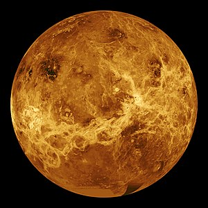

|

Уже 1610 р. Галілео Галілей за допомогою телескопічних спостережень вивчав зміну фаз у Венери, тобто зміну її видимої форми від диска до вузького серпа. Перші відомості про поверхню планети було отримано із Землі в 30-х роках XX ст. за допомогою новітнього винаходу — радіотелескопів. На початку XX ст. радіотелескопічні спостереження, інфрачервоні й ультрафіолетові методи дослідження Венери не давали повної картини рельєфу планети, а також інформації про її природу. Імовірно, на поверхні Венери переважали бурі, пекельна спека й отруйні хмари, але ці гіпотези не були достовірними. Але з початком нової ери в астрономії — винаходом космічних апаратів — почав надходити величезний обсяг інформації про природу Венери. Запуск перших штучних супутників Землі, а потім відправка перших АМС та космічних зондів дали змогу вивчати Венеру з ближчих відстаней. 12 лютого 1961 р. радянські науковці запустили першу міжпланетну станцію «Венера-1», яка через три місяці пройшла на відстані близько 100 тис. км від Венери і вийшла на орбіту супутника Сонця. Радіозв'язок із цією станцією припинився через вихід із ладу бортової апаратури на відстані більше 3 млн км від Землі. У грудні 1962 р. американці запустили в космос зонд «Марінер-2», що пройшов від Венери на відстані 35 тис. км. Установлена на його борту апаратура (радіометр, магнітометр тощо) показала, що магнітне поле планети слабке: магнітний момент Венери не перевищує 5—10 % магнітного поля Землі. Також з'ясувалося, що радіовипромінювання формується в нижній частині атмосфери Венери, а не в іоносфері, як вважалося раніше. |